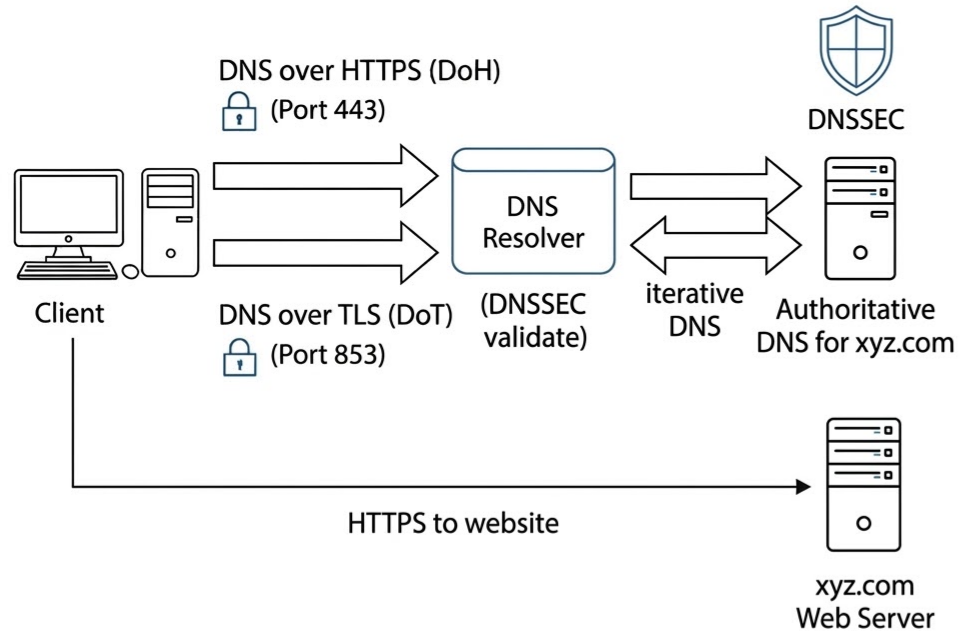
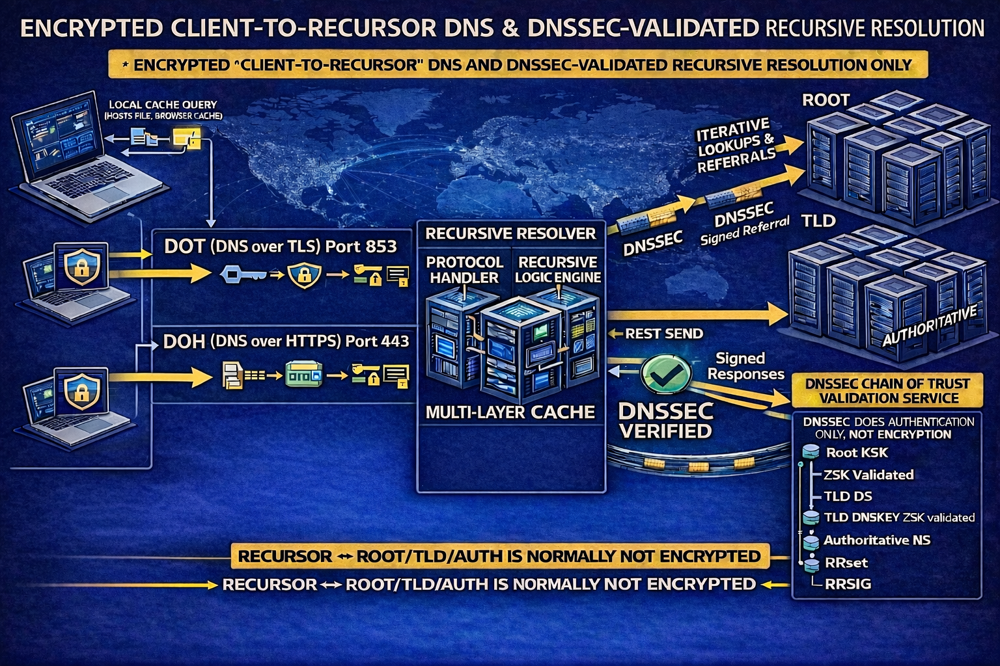

We believe security software like Kicksecure needs to remain Open Source and independent. Would you help sustain and grow the project? Learn more about our 11 year success story and maybe DONATE!

Authenticated/Encrypted DNS, DNSSEC (over clearnet or Tor)
 Documentation for this is incomplete. Contributions are happily
considered! See this for
potential alternatives.
Documentation for this is incomplete. Contributions are happily
considered! See this for
potential alternatives.
 Warning: This is for testers-only!
Warning: This is for testers-only!
Introduction
Domain Name System (abbreviated DNS) is a critical protocol used to
facilitate most modern communication over the Internet. At its core, it
allows translating a human-readable domain name (for instance,
www.kicksecure.com) into a corresponding IP
address (for instance, 95.216.66.124, an IP address
used by www.kicksecure.com at the time of this writing).
This is useful for a number of reasons, including but not limited to the
following:
- Usability: Domain names are far easier to read, write, and remember than IP addresses.
- Stability: IP addresses often change and are thus not a stable, reliable identifier for a service on the Internet. Rather than requiring everyone to keep up-to-date with an unstable identifier, a domain name can simply be redirected to point to a new IP address if it becomes necessary.
- Additional metadata: Domain names often have additional data associated with them such as TLS certificates, which provide a way of tying a particular domain (and the content hosted by the IP address it points to) to a particular identity.
While there are some Internet communications that rely on IP addresses alone, most of the time a domain name is involved in some way. Domain names don't actually refer to any particular machine, so the challenge then becomes how to determine which IP is associated with which domain name. A DNS server typically provides this answer. A machine will know in advance the IP address of a DNS server, and can query it to determine the IP address for any domain name it wishes to access.
DNS suffers from a number of security and privacy concerns. Most notably, it is usually implemented as an insecure protocol in the same way HTTP is, fully unencrypted and open to modification in transit. While HTTPS and HTTPS Strict Transport Security (HSTS) can prevent a user from being pointed to a malicious server when attempting to access an authentic one, this doesn't rectify problems with unencrypted communications, and HTTPS can be worked around using techniques such as SSL stripping in some situations.[1] DNS's lack of encryption also leaves it vulnerable to surveillance and censorship.[2]
There are solutions to some of DNS's problems. DNSSEC can be used to prevent malicious DNS replies[3], and Tor can be used to mitigate privacy and censorship concerns.
DNS Resolver Features
- Recursive:
[4]A recursive DNS lookup is where one DNS server communicates with several other DNS servers to hunt down an IP address and return it to the client. Recursively querying a host that is not cached as an address, the resolver needs to start at the top of the server tree and query the root servers, to know where to go for the top level domain for the address being queried.
- Opposite of recursive is iterative:
[5]an iterative DNS query, where the client communicates directly with each DNS server involved in the lookup.
- Opposite of recursive is iterative:
- Authentication:
- DNSSEC:
The protocol provides cryptographic authentication of data, authenticated denial of existence, and data integrity, but not availability or confidentiality.
- Validating: Perform DNSSEC authentication, end-to-end verification
of DNSSEC.
- Opposite of validating is non-validating.
- DNSSEC:
- Encryption:
- DNS over TLS (DoT): Encrypted DNS. (Port
853). - DNS over HTTPS (DoH): Encrypted DNS, similar to
above but provides better censorship circumvention in theory as it uses
the commonly used web https port
443. - Opposite of encryption is unencrypted.
- DNS over TLS (DoT): Encrypted DNS. (Port
- Caching:
[6]To avoid having to take the performance hit of issuing multiple iterative requests to other DNS servers every time it receives a recursive request, the server caches its results.
- Opposite of caching is non-caching.
DNS Encryption
DNS encryption does not imply DNS authentication.
root name servers
Root name servers do not support DNS encryption between the recursive resolver and authoritative servers yet.
DoT vs DoH
Quote: DNS over HTTPS in Unbound
There are, however, DNS clients that do not support DoT but are able to use DNS-over-HTTPS (DoH) instead. Where DoT sends a DNS message directly over TLS, DoH has an HTTP layer in between. Where DoT uses its own TCP port (853), DoH uses the standard HTTPS port (443). Using the standard HTTPS port makes it harder to block DoH queries, as blocking TCP traffic on port 443 will also block a lot of web traffic. Some people think this is great as this ensures that the user's DNS queries will always be encrypted; others have concerns about DoH as they might lose control over clients in their network.
At NLnet Labs we are in favour of encrypting DNS traffic to limit the exposure of privacy-sensitive data. By adding downstream DoH support to Unbound we hope to increase the ratio of encrypted DNS traffic and increase the number of resolvers that offer encrypted services in home networks, enterprise networks, ISPs, and public resolvers.
There was some bad press about DoH. [7] There are some stakeholders who find DoH troublesome (oppressive governments, censors, corporate network administrators) however see this rebuttal by the DoHoT project. It would also be problematic if browser vendors such as Google Chromium or Mozilla Firefox enabled DoH by default. That is because it delegates the power which website remains reachable and which gets blocked in DNS from the internet service provider (ISP) to the browser vendor. Firefox enabled DoH by default in the USA. [8] In conclusion, an end-user who is aware of their DNS settings and opts in to reconfigure at the system level to use either a DoT or DoH server should have only advantages and no disadvantages.
Here is a big DNS over HTTPS (DoH) server list.
DNS Authentication
There is a difference between a local DNSSEC aware resolver and a local DNSSEC validating resolver.
At the time of writing, no major end-user operating system performs DNSSEC validation by default. [9]
When enabling DoH in some web browsers such as Mozilla Firefox, there is no authentication yet. In other words, Firefox does not perform local DNSSEC validation yet.
Mozilla Support: DNS-over-HTTPS (DoH) FAQ, DNSSEC validation
DNS Resolving Security Feature Wishlist
Ideally, all of the following security properties would be fulfilled by a local DNS resolver setup at the same time:
- Recursive: One would want to get the information from the most authoritative source, starting from the root name servers instead of iterative "asking a third-party server".
- Authentication:
- DNSSEC: authenticating DNSSEC signed DNS data.
- Validating: Locally verifying DNSSEC signatures instead of non-validating, i.e. trusting a remote DNS server to do that.
- Encryption: To protect non-DNSSEC data from malicious manipulation through man-in-the-middle attacks (injection of advertisements, malicious redirects, malware), to protect network neutrality, privacy and for circumventing censorship.
- TODO:
- anon-dns
- onion
DNS Security Optimization Problem
At the moment it is impossible to get all features from the DNS Resolving Security Feature Wishlist at the same time.
Since root name servers are required for recursive DNS resolution but do not support encryption yet, it is, at the time of writing, impossible to have both recursive and encrypted DNS resolution.
The author of this wiki page is unaware of any DNS resolver software with DNS encryption features that would also perform local DNSSEC validation on the user's computer.
dnscrypt-proxyis DNSSEC aware but dnscrypt-proxy at time of writing is DNSSEC non-validating. [10]cloudflaredis DNSSEC non-validating? [11]systemd-resolved:- DNSSEC is a low priority for
systemd-resolveddevelopers [12]; - has a history of DNSSEC related security issues [13]; and
- security bug resolved DNSSEC validation can be bypassed by MITM had a multi-year remediation timeline and was fixed only after CVE tracking was raised; see detailed timeline.
- DNSSEC is a low priority for
When a user is using dnscrypt-proxy or
cloudflared, the user must choose one
or multiple specific DNS servers used for DNS resolution (iterative DNS
resolver). I.e. the user cannot use these programs as a recursive DNS
resolver.
It is a difficult choice to make. It depends on the user's threat model.
- The user either trusts the root DNS servers or third-party servers.
- TODO: expand
There are various options.
- A The starting situation in which most users are in. Without any configuration, most users use their internet service provider's DNS server which often is DNSSEC unaware. Even if DNSSEC aware, the ISP would do validation for the user since as mentioned above, no (mainstream) operating systems at the time of writing perform local DNSSEC validation. Therefore the user is vulnerable to malicious DNS through a man-in-the-middle attack on DNS for both DNSSEC secured and DNSSEC unsecured domains.
- B Using encrypted DNS without local DNSSEC validation with a trusted DNS server should by definition prevent a man-in-the-middle attack on DNS for both DNSSEC secured and DNSSEC unsecured domain names. But then which DNS servers are really considered trusted by the user? Most users do not wish to trust any third-parties if not unavoidable.
- C Using authenticated DNS (performing local DNSSEC validation) without encryption in iterative mode using any supported DNS servers. Which DNS servers support that? In iterative mode, can DNS servers just lie and pretend "no DNSSEC available for that domain name?"
- D Using authenticated DNS (performing local DNSSEC validation) without encryption in recursive mode without needing to trust any DNS server. In that case, the user has much higher certainty [14] that any DNSSEC secured domains will be properly resolved. Any malicious modifications by a man-in-the-middle attack on DNSSEC secured DNS replies would be detected. However, DNSSEC unsecured domains would still be vulnerable to man-in-the-middle attacks. Perhaps even more vulnerable, since a recursive DNS resolver makes much more requests to much more targets on the internet. It depends on where the user would consider a man-in-the-middle attack to be most likely. From their computer to their ISP or anyone in between or rather anyone outside their ISP network.
For all options, a man-in-the-middle attacker could attempt a denial of service of all of the user's DNS requests. This would likely lead to the user believing that their DNS configuration is broken and perhaps to downgrade to insecure options such as going back to their ISP's DNS server. It might be possible to reduce this risk by tunneling all DNS traffic over Tor.
DNS with DOT/DOH and DNSSEC support
Image: DNS with DOT/DOH and DNSSEC support (illustrative simplified image)

Potential Obstacles
This is a list of things the user should know before and after considering to modify the system default DNS resolution. Sorted in order of likelihood. Most likely obstacles are on top of the list.
- Website based tests: Might be dysfunctional and show false positives.
- Browser extensions: A browser extension such as NoScript might break website based tests.
- Tunnel links: Issues can be introduced through use of a tunnel link such as a VPN.
- Partial resolution: Some domains can be resolved while others fail.
- VirtualBox NAT DNS proxy: VirtualBox users:
VBoxManage modifyvm "$VMNAME" --natdnsproxy1 onbreaks DNS. - Broken IPv6 connectivity: The user's computer might have a
local IPv6 but no actual IPv6 connectivity which might confuse DNS
resolvers such as
unbound. - Browser bugs: The web browser might have a bug that disables DNSSEC.
Many applications do not use system DNS but their own internal DNS implementation.
- Web browsers: The web browser might not use system DNS but
use its own DNS.
- Firefox in the USA comes with its own DoH enabled by default. [15]
- Tor Browser does not use system DNS but uses Tor to resolve DNS.
- Other web browsers not listed here might use similar implementations.
- Check browser settings or use search engines on how to view/change these settings.
- Android: Has private DNS.
- Other applications: Other applications (non-browser) might use similar implementations.
In other words, changing system DNS settings according to this wiki page might not result in changes how the web browser resolves DNS. For example, Firefox in the USA would still use its internal DoH default setting, unless modified by the user to use system DNS.
To test if the browser (or any other application) uses system DNS or its own internal DNS implementation, the user could temporarily disable their system DNS resolution.
To disable system DNS resolution...
1
Edit the /etc/resolv.conf system wide DNS configuration
file.
sudoedit /etc/resolv.conf
2
Disable all settings by adding a hash (#) in front of each
line.
3 Done.
The process of disabling system DNS has been completed.
Unbound
Unbound (unbound
security audit) (in
Debian) is a validating, recursive, and caching DNS resolver with
DoT and DoH support. In context of censorship circumvention, routing DoT
over Tor is possible and fast enough according to the DoHoT: making practical use
of DNS over HTTPS over Tor.
1 Choose an option.
recursive, unencrypted, validating, caching
No extra steps are required for this option.
iterative, encrypted (DoT), validating, caching
1
Create folder /etc/unbound/unbound.conf.d.
sudo mkdir --parents /etc/unbound/unbound.conf.d
2
Open file /etc/unbound/unbound.conf.d/50_user.conf in an
editor with administrative ("root") rights.
1 Select your platform.
2 Notes.
- Sudoedit guidance: See Open File
with Root Rights for details on why using
sudoeditimproves security and how to use it. - Editor requirement: Close Featherpad (or the chosen text
editor) before running the
sudoeditcommand.
3 Open the file with root rights.
sudoedit /etc/unbound/unbound.conf.d/50_user.conf
2 Notes.
- Sudoedit guidance: See Open File
with Root Rights for details on why using
sudoeditimproves security and how to use it. - Editor requirement: Close Featherpad (or the chosen text
editor) before running the
sudoeditcommand. - Template requirement: When using Kicksecure-Qubes, this must be done inside the Template.
3 Open the file with root rights.
sudoedit /etc/unbound/unbound.conf.d/50_user.conf
4 Notes.
- Shut down Template: After applying this change, shut down the Template.
- Restart App Qubes: All App Qubes based on the Template need to be restarted if they were already running.
- Qubes persistence: See also Qubes Persistence
- General procedure: This is a general procedure required for Qubes and is unspecific to Kicksecure-Qubes.
2 Notes.
- Example only: This is just an example. Other tools could achieve the same goal.
- Troubleshooting and alternatives: If this example does not work for you, or if you are not using Kicksecure, please refer to Open File with Root Rights.
3 Open the file with root rights.
sudoedit /etc/unbound/unbound.conf.d/50_user.conf
3 Paste the following lines. [16]
Note: The user is free to add, remove, modify the servers at the bottom of the following configuration snippet.
server:
#verbosity: 5
hide-identity: yes
hide-version: yes
interface: 127.0.0.1@53
interface: ::1@53
port: 53
do-ip4: yes
do-ip6: no
do-udp: no
do-tcp: yes
tls-cert-bundle: "/etc/ssl/certs/ca-certificates.crt"
forward-zone:
name: "."
forward-tls-upstream: yes
# Freifunk München
forward-addr: 195.30.94.28@853#dot.ffmuc.net
# Digitalcourage e.V.
forward-addr: 46.182.19.48@853#dns2.digitalcourage.de
# Digitale Gesellschaft (CH) DNS Server
forward-addr: 185.95.218.42@853#dns.digitale-gesellschaft.ch
forward-addr: 185.95.218.43@853#dns.digitale-gesellschaft.ch
# Cloudflare
forward-addr: 1.1.1.1@853#cloudflare-dns.com
forward-addr: 1.0.0.1@853#cloudflare-dns.com
4 Save.
2
Install dnssec-trigger. [17]
Install package(s) dnssec-trigger following these
instructions:
1 Platform specific notice.
- Kicksecure: No special notice.
- Kicksecure-Qubes: In Template.
2 Update the package lists and upgrade the system.
sudo apt update && sudo apt full-upgrade
3
Install the dnssec-trigger package(s).
Using apt command line --no-install-recommends option is in
most cases optional.
sudo apt install --no-install-recommends dnssec-trigger
4 Platform specific notice.
- Kicksecure: No special notice.
- Kicksecure-Qubes: Shut down Template and restart App Qubes based on it as per Qubes Template Modification.
5 Done.
The procedure of installing package(s) dnssec-trigger is
complete.
3 Done.
The process is complete.
Unbound known issues:
- Broken IPv6 connectivity: Unbound fails to resolve DNS if the system has IPv6 enabled but IPv6 connectivity is broken
Testing DNSSEC
Browser Tests
DNSKEY Test
1 Learn how to interpret the results.
See the following A versus B.
A Something similar to the following would be shown if the system resolver does not have DNSSEC support.
; <<>> DiG 9.11.5-P4-5.1-Debian <<>> +multiline . DNSKEY
;; global options: +cmd
;; Got answer:
;; ->>HEADER<<- opcode: QUERY, status: NOTIMP, id: 42982
;; flags: qr rd ra; QUERY: 1, ANSWER: 0, AUTHORITY: 0, ADDITIONAL: 0
;; WARNING: EDNS query returned status NOTIMP - retry with '+noedns'
;; QUESTION SECTION:
;. IN DNSKEY
;; Query time: 0 msec
;; SERVER: 10.139.1.1#53(10.139.1.1)
;; WHEN: Wed Jul 17 17:41:33 UTC 2019
;; MSG SIZE rcvd: 17B Something similar to the following would be shown if the system resolver has DNSSEC support.
; <<>> DiG 9.11.5-P4-5.1-Debian <<>> +multiline . DNSKEY
;; global options: +cmd
;; Got answer:
;; ->>HEADER<<- opcode: QUERY, status: NOERROR, id: 63055
;; flags: qr rd ra ad; QUERY: 1, ANSWER: 2, AUTHORITY: 0, ADDITIONAL: 1
;; OPT PSEUDOSECTION:
; EDNS: version: 0, flags:; udp: 1252
;; QUESTION SECTION:
;. IN DNSKEY
;; ANSWER SECTION:
. 8461 IN DNSKEY 256 3 8 (
AwEAAcTQyaIe6nt3xSPOG2L/YfwBkOVTJN6mlnZ249O5
Rtt3ZSRQHxQSW61AODYw6bvgxrrGq8eeOuenFjcSYgNA
McBYoEYYmKDW6e9EryW4ZaT/MCq+8Am06oR40xAA3fCl
OM6QjRcT85tP41Go946AicBGP8XOP/Aj1aI/oPRGzRnb
oUPUok/AzTNnW5npBU69+BuiIwYE7mQOiNBFePyvjQBd
oiuYbmuD3Py0IyjlBxzZUXbqLsRL9gYFkCqeTY29Ik7u
suzMTa+JRSLz6KGS5RSJ7CTSMjZg8aNaUbN2dvGhakJP
h92HnLvMA3TefFgbKJphFNPA3BWSKLZ02cRWXqM=
) ; ZSK; alg = RSASHA256 ; key id = 59944
. 8461 IN DNSKEY 257 3 8 (
AwEAAaz/tAm8yTn4Mfeh5eyI96WSVexTBAvkMgJzkKTO
iW1vkIbzxeF3+/4RgWOq7HrxRixHlFlExOLAJr5emLvN
7SWXgnLh4+B5xQlNVz8Og8kvArMtNROxVQuCaSnIDdD5
LKyWbRd2n9WGe2R8PzgCmr3EgVLrjyBxWezF0jLHwVN8
efS3rCj/EWgvIWgb9tarpVUDK/b58Da+sqqls3eNbuv7
pr+eoZG+SrDK6nWeL3c6H5Apxz7LjVc1uTIdsIXxuOLY
A4/ilBmSVIzuDWfdRUfhHdY6+cn8HFRm+2hM8AnXGXws
9555KrUB5qihylGa8subX2Nn6UwNR1AkUTV74bU=
) ; KSK; alg = RSASHA256 ; key id = 20326
;; Query time: 0 msec
;; SERVER: 127.0.2.1#53(127.0.2.1)
;; WHEN: Wed Jul 17 17:43:09 UTC 2019
;; MSG SIZE rcvd: 5782 Run the following command.
dig +multiline . DNSKEY
3 Interpret the result.
4 Done.
DNSSEC DNSKEY test has been completed.
dig +dnssec Test
Test with dig.
dig +dnssec nic.cz @localhost
Please refer to upstream documentation on how to interpret the DNSSEC test results.
DoHoT
DoHoT issue tracker discussion
References
Forum Discussion
- https://forums.whonix.org/t/use-dnscrypt-by-default-in-kicksecure-not-whonix/8117
- https://forums.whonix.org/t/default-dns-provider-discussion-for-kicksecure-not-whonix/16870
Footnotes
- https://forums.whonix.org/t/use-dnscrypt-by-default-in-kicksecure-not-whonix/8117/35
- https://forums.whonix.org/t/use-dnscrypt-by-default-in-kicksecure-not-whonix/8117/68
- https://www.icann.org/resources/pages/dnssec-what-is-it-why-important-2019-03-05-en
- https://wiki.archlinux.org/title/unbound
- https://www.cloudflare.com/learning/dns/what-is-recursive-dns/
- https://www.digitalocean.com/community/tutorials/a-comparison-of-dns-server-types-how-to-choose-the-right-dns-configuration
- ZdNet: DNS-over-HTTPS causes more problems than it solves, experts say
- https://support.mozilla.org/en-US/kb/dns-over-https-doh-faqs#w_are-you-rolling-this-default-out-in-europe
- * https://wiki.debian.org/DNSSEC * https://docs.microsoft.com/en-us/previous-versions/windows/it-pro/windows-server-2012-r2-and-2012/jj200221(v=ws.11) * https://security.stackexchange.com/questions/93879/non-validating-dnssec-aware-client-security-implications
- https://github.com/DNSCrypt/dnscrypt-proxy/issues/167#issuecomment-367689381
- https://community.cloudflare.com/t/does-the-cloudflared-dns-client-locally-verify-dnssec/335402
But yes, DNSSEC issues are not a high priority for us at the moment. Other DNS issues are more relevant.July 2023: Lennart Poettering, systemd developer
- 2020: systemd-resolved: DNSSEC doesn't prevent MITM had been reported already in 2020.
- Ignoring potential exploitation of the DNS resolver software.
- https://www.zdnet.com/article/mozilla-enables-doh-by-default-for-all-firefox-users-in-the-us/
- https://www.privacy-handbuch.de/handbuch_93c.htm
- https://www.nlnetlabs.nl/projects/dnssec-trigger/about/
Categories: Documentation